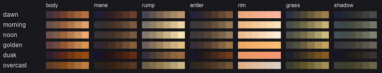
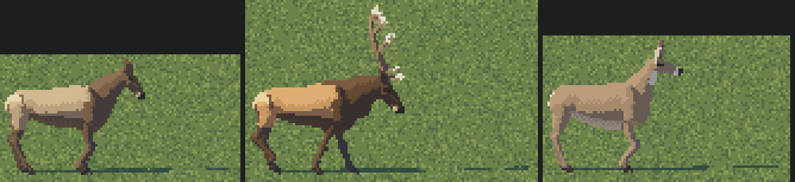
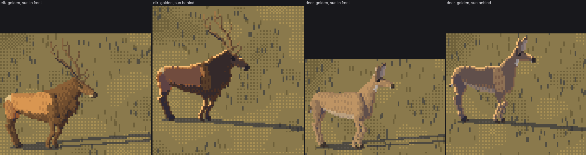
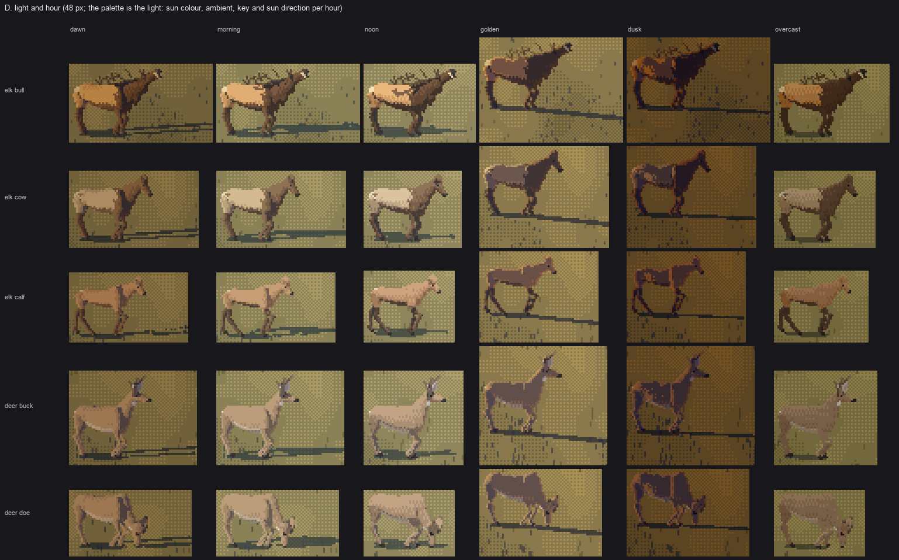
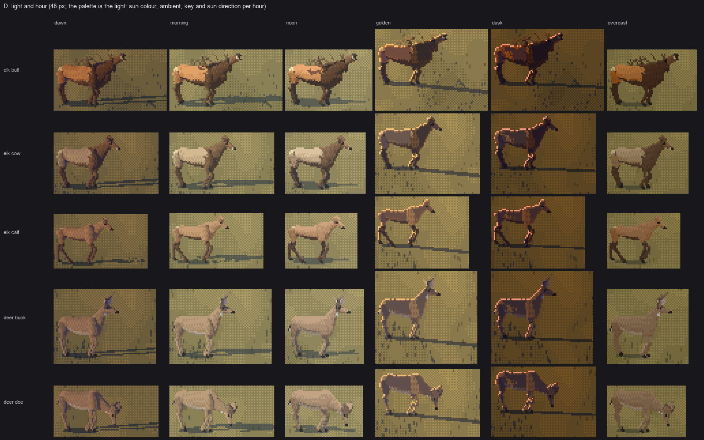
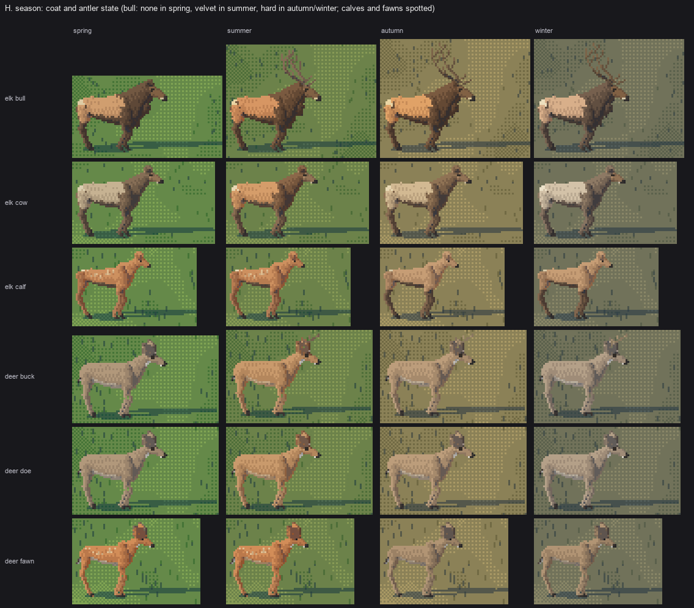

5. Light and hour: the palette, and the back-light rim
Back to the tutorial. Code: palette.py, hide.py, paint.value_field, micro.py in ~/work/pixelart-studies/elements/deer-elk/src/.
The index canvas says what each pixel is (a hide material and a step 0–5); the palette says how it's lit. So an hour is a palette swap plus a sun direction, and the same animal serves dawn to dusk. The one image the studio singled out from my work, the dusk gravel bar, is almost entirely this page's back-light rule.
Ramps walk from ambient to sun
Every material is a pair of colours read off the photos (its shadow dark and its lit light). Each hour is a sun colour, an ambient (sky) colour, a key, a warmth and a coolness. A ramp walks from dark to light in OKLab, pulling the lights toward the sun and the darks toward the ambient:
def ramp(dark, light, n, sun, amb, warm=0.22, cool=0.3, key=1.0):
Ls, La = to_lab(sun), to_lab(amb)
for i in range(n):
t = i / (n - 1)
c = to_lab(dark) * (1 - t) + to_lab(light) * t
c = c * (1 - warm * t ** 1.5) + Ls * warm * t ** 1.5 # lights toward the sun
c = c * (1 - cool * (1 - t) ** 2) + La * cool * (1 - t) ** 2 # darks toward the sky
if i == 2: c[1:] *= 1.3 # the reflected step: more saturated
c[0] *= key
out.append(to_rgb(c))
HOURS = {
"dawn": dict(sun=(255, 186, 172), amb=(78, 88, 160), key=0.78, el=10, warm=0.30, cool=0.46),
"morning": dict(sun=(255, 236, 200), amb=(120, 150, 190), key=0.96, el=30, warm=0.20, cool=0.30),
"noon": dict(sun=(255, 250, 236), amb=(130, 160, 196), key=1.00, el=58, warm=0.14, cool=0.26),
"golden": dict(sun=(255, 196, 120), amb=(110, 110, 160), key=0.92, el=14, warm=0.36, cool=0.34),
"dusk": dict(sun=(250, 150, 120), amb=(70, 70, 130), key=0.66, el=4, warm=0.40, cool=0.48),
"overcast": dict(sun=(214, 216, 214), amb=(150, 156, 160), key=0.86, el=45, warm=0.06, cool=0.22),
}

fig. The bull's ramps (body, mane, rump, antler, the rim, grass, cast shadow) at each hour.
Coats are pairs too, per species and sex, with season overrides: the autumn bull orange-tan to near cream with a black-brown mane; the cow pale greyish tan; the blacktail grey-brown, rust in summer. Winter desaturates the hide to 62% chroma (thicker, greyer, duller); spring to 80% (the ragged moult). depth lifts the darks toward the haze strongly and the lights barely, as the master-copy student measured on Ferrari.
Put the sun where it models the form
With the sun from the front-left, a side-on animal's whole visible side lit to the same step: flat.


nb032, nb034. The sun from the front; the sun 25° in front of side-on (azimuth −150 to −160). A lit back, a halftone side, a shaded belly.
For hero shots and sheets, the sun about 25° in front of side-on and 30–45° up is the default I'd start from.
The back-light rim
Golden hour and dusk looked like noon through brown sunglasses until I put the sun behind the animals. A back-lit animal is a dark shape, and the light is on the edges facing the glow: fur lit from behind. Ferrari does it in V02 on the dead tree against the sunset, one pixel of dull maroon on every edge that faces the glow.

fig. Golden hour with the sun in front and behind, for a bull and a doe.
It took three versions:
- Every sun-side silhouette pixel at the top step. Beautiful on the bull's back (nb072, "a lovely Ferrari move", said the studio critic), but on the hour sheet at dusk's low key the rim was hide-coloured and too dim to read against the sky.
- In the sun's colour. The rim is its own palette row, the body colour mixed 35–85% toward the sun colour, whatever the key:
python base = ct[rig.BODY][1] tab[RIM] = [depth_mix(mix(base, h["sun"], 0.35 + 0.1 * i), haze, depth * 0.5, 1.0) for i in range(STEPS)]Now it read, and my critic called it "a neon outline", because it ran round the belly and the backs of the legs too. - Only on edges facing the glow, broken. The outward normal of the silhouette comes from the gradient of the smoothed mask; the rim lights only where it faces the sun's screen direction pulled upward (light from behind wraps over the top), never the underside, and it breaks every few pixels. At 36 px and up a halftone pixel sits inside it, two hairs deep:
python m = ndi.gaussian_filter(on.astype(float), 1.0) gy, gx = np.gradient(m); nx, nv = -gx, gy # outward normal, v up slr = sl + np.array([0.0, 0.9]); slr /= np.linalg.norm(slr) brk = ((xx_ * 73 + yy_ * 151 + 17) % 11) < 2 rim = edge & ((nx * slr[0] + nv * slr[1]) > 0.3) & (nv > -0.25) & ~brk



nb072, nb070, nb105. Version 1 on a bull; version 1 on the whole hour sheet (look at golden and dusk); version 3 at dusk.
Small figures need it too, in glyph terms. At first the far herd in the dusk scene was lit like noon: khaki blobs against a sunset. In micro.py, when the sun is behind (its component away from the viewer > 0.4), every step drops to shadow and the body's top edge takes the rim colour, broken every seventh pixel.
Overcast is a different light, not a dim sun
With the sun behind cloud, nothing casts a shadow and nothing has a terminator; the sky is the light. value_field switches to "how much sky does this surface see", held close, with no cast shadow:
if view.diffuse >= 0.5:
x = 1.6 + 2.2 * np.clip(0.5 + 0.5 * n[..., 2], 0, 1) + 0.3 * np.clip(-n[..., 1], 0, 1)

Sheet D, final: dawn, morning, noon, golden (back-lit), dusk (back-lit), overcast (diffuse).
Seasons

Sheet H: the bull with no antlers in spring, velvet in summer, hard dark antlers with ivory tips in autumn and winter; calves and fawns spotted in spring and summer, plain in autumn; winter coats greyer.
Where it stops
The rim is right on the body and could be richer on the thin forms (ears, antler tips, the belly fringe): back light glows most where the fur is thinnest. The summer velvet antler is too faint against grass: velvet is thick, rounded and darker than the background. And the hour sheet's ground is my calm stand-in, not a painted meadow; in a real scene the ground's own light would do half of this page's work.